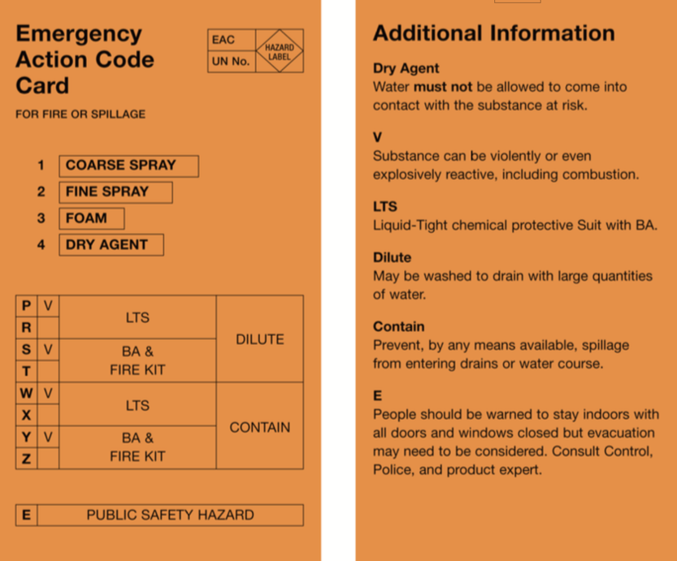
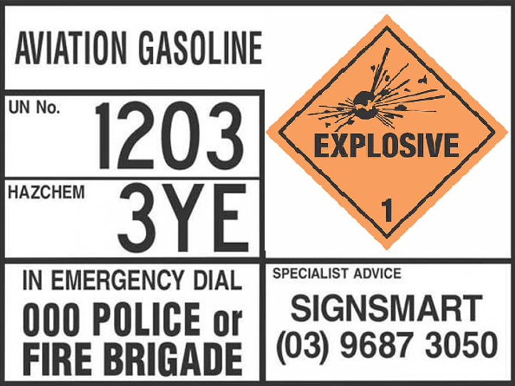

1. What is the minimum initial stand-off distance for a HAZMAT incident?
2. Where should appliances ideally be parked at a HAZMAT incident?
3. What can be used to identify chemicals from a safe distance?
4. What does HAG stand for?
5. What does the first letter of a HAZCHEM code indicate?
6. What does the second letter of a HAZCHEM code indicate?
7. What is the purpose of the hot zone?
8. What PPE level uses a fully encapsulated suit with BA inside?
9. What principle should responders follow at HAZMAT incidents?
10. What is an overdrum used for?
11. Where does decontamination occur?
12. When should dry decontamination be used?
13. During wet decontamination, which casualty should be decontaminated first in a team of two?
14. Which hazard class covers corrosive substances?
15. Which hazard class covers flammable liquids?